strange music page
progressive? * * * german
#FAUSTの1枚目、えーと透明なレコードに、透明なジャケットにこのレントゲン写真の印刷というスゴイLPだったみたいです。ドイツのプログレを代表されるような1枚ですが、これで代表されてしまうってのも何か問題があるような。内容はポップでノイズでコラージュ。AMON DUULやCAN等に比べるとちょっとポップで普通なようにも聞こえますが、こっちの方が毒は大量に盛られています。
最後のコンサートで、メンバーが卓球をやってたというエピソードは凄く気に入ってます。
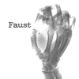
- Why Don't You Eat Carrots
- Meadow Meal
- Miss Fortune
Produced by Uwe Nettelbeck
- Werner Diermaier
- Joachim Irmler
- Arnulf Meifert
- Jean-Herve Peron
- Rudolf Sosna
- Gunther Wusthoff
- Kurt Graupner
- Andy Hertel
POLYDOR: POCP-2155 (original release 1971)
#前のレコードは透明で、2枚目は真っ黒になってしまいました。
前作よりも一曲が短くなって、まるでポップスを演奏しているかのようですけど.....聴けば聴くほどポップとは対極に有る音かも。何でドイツ人ってこーなんだろ？すべてが捻じ曲がってます。
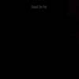
- It's A Rainy Day, Sunshine Girl
- On The Way To Abamae
- No Harm
- So Far
- Mamie is Blue
- I've Got My Car And My TV
- Picnic On A Frozen River
- Me Lack Space...
- ...In The Spirit
Produced by Uwe Nettelbeck
- Werner Diermaier
- Hans Joachim Irmler
- Jean Herve Peron
- Rudolf Sosna
- Gunther Wusthoff
POLYDOR: POCP-2156 (original release 1972)
#吉祥寺ディスクユニオンで\1600。
ファウストの4枚目。VIRGINからの2枚目。なんだか「ポップになった」とか言われてるよーですが、結構好きです。ファウストの「音楽人力再構築」ってのが一番わかり易く聴けるよーな気がします。アコースティックで渋い曲の上に蛍光ペンで落書きしたよーな、ヘンな電子音がかぶさっってきたりとか。
1曲めの「Krautrock」とかワンコード・ワンリフ・ワンパターンで、構造は
NEU!っぽいんですけど、なんだかこーウダウダした感じがファウストらしいというか。NEU!の高揚感とは全然違うものになってます。
特に気に入ったのが「Picnic On A Frozen River, Deuxieme Tableus」で、なんか小学校の鼓笛隊みたいな2ビートのドラムがとても異様。かっちょいい。(2003.1.13)
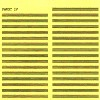
- Krautrock
- The Sad Skinhead
- Jennifer
- Just A Second (Starts Like That!)
- Picnic On A Frozen River, Deuxieme Tableux
- Gimmy Smile
- Lauft..Heisst Das Es Lauft Oder Es Kommt Bald..Lauft
- It's A Bit of A Pain
produced by Uwe Nettelbeck
VIRGIN RECORDS: CAROL-1885-2 (original release 1973)
#ドイツロックの中でも有名な一枚らしいです。全編重苦しい、気持ちの悪いぐちゃぐちゃした世界です。ほとんど曲とは呼べないような、エフェクトとかギミックだらけの音の応酬です。個人的にはお馬鹿っぷりの最大限に発揮された次のアルバムのほうが好きなんですが....とりあえずドイツ気違いロックの代表作。
- Stone In
- Girl Call
- Next Time See You At The Dalai Lhama
- Ufo
- Der LSD - Marsch
- Mani Neumeier (percussions,drums,voice,tapes)
- Uli Trepte (bass)
- Ax Genrich (guitars)
#ジャケットお尻です。1枚目の完全にぐちゃぐちゃでドラッギーな世界よりは、多少整理されたロックミュージック(もどき)をやっています。前作の重苦しい雰囲気は消えて、スコーンぬけた気持ちの良いこわれ音楽になっています。キチガイ集まりのドイツの音楽の中でもかなりのイカレぶりです。最高。
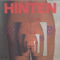
- Electric Junk
- The Meaning of Meaning
- Bo Diddley
- Space Ship
- Mani Neumeier (drums,percussion,voice)
- Uli Trepte (bass,backing vocals)
- Ax Genrich (guitars)
#これも新宿disk unionで、値段忘れたけど。なんかGURU GURUって2 - 4 - 1 - 3枚目って順番で聴いちゃったんですけど、わかりやすいくらい4枚目と2枚目の間の音楽に聞こえました。
まだ4枚目よりも壊れ度が高くて、面白いかも。
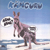
- Oxymoron
- Immer Lustig (いつも陽気に)
- Baby Cake Walk
- Ooga Booga
- Mani Neumeier (drums,voice)
- Uli Trepte (bass,voice)
- Ax Genrich (guitars,voice)
- Conny Plank (engineering)
POLYDOR: POCP-2398 (original released 1972, Metronome Musik)
#Uli Tripteが抜けてしまった4枚目。能天気なロックンロールメドレーも何かすごい違和感を感じます。形としてはフツーの物に聞こえなくも無いですけど、基本的にまがいものの音です、そこがグルグルならではの面白さかも。
- Samantha's Rabbit
- Medley
- Rocken Mit Eduard
- Something else
- Weekend
- Twenty Flight Rock
- Woman Drum
- Der Elektrolurch (電気ガエル)
- The Story of Life
produced by GURU GURU & Conny Plank
- Mani Neumeier (drums,percussions,vocals)
- Ax Genrich (guitars,vocals)
- Bruno Schaab (bass,vocals)
POLYDOR: POCP-2399 (original released 1973 - Metronome Musik)
#飲み会明け、渋谷で友達とお買い物。やっぱり寄ってしまうディスクユニオン。
特に欲しいもの無かったような気がしてたんですけど、衝動的にコレ。
なんかこの人達何聴いても結構イイですね、ダモ鈴木のインチキ臭い英語と更にインチキ臭い日本語のボーカルがイイです、ヘロヘロで。なんかCAN聴くと気合入っちゃいますね、ミョーに。(1999.12.3)
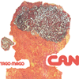
- Paperhouse
- Mushroom
- Oh Yeah
- Helleluhwah
- Aumgn
- Peking O
- Bring me Coffee or Tea
- Holger Czukay (bass)
- Michael Karoli (guitars)
- Jaki Liebezeit (drums)
- Damo Suzuki (vocals)
- Irmin Schmidt (keyboards)
SPOON RECORDS: SPOON-006/7 (original release 1971)
#友達のホリコシさんの家に行ったら壁にこのレコードが飾って有って、何か買うついでに売りつけられちゃいました。というか、めっちゃカッチョ良かったので全然オッケーでしたが。CANは"CANNIBALISM 1"だけ聴いて終わらせてたんですけど、やっぱ全部聴かなきゃダメだと再認識。聴くドラッグ(アップ系)、次第にボリュームが上がっていきます。最高。
- Pinch
- Ring Wsan Song
- One More Night
- Vitamin C
- Soup
- I'm so green
- Spoon
- Michael Karoli (guitars)
- Damo Suzuki (vocals)
- Jaki Liebezeit (drums)
- Irmin Schmidt (keyboards)
- Holger Czukay (bass)
SPOON RECORDS: SPOON-008 (original relaese 1972)
#高校生の頃に買いました。その頃はシンフォ系のプログレにはまってた時期だったので、全然良いと思ってなかったんで、すぐ聴かなくなっちゃいました。
で、ひさびさに聴いたらはまりました。めちゃ格好良いです。単調なリズム、繰り返しのギター、いーかげんな歌、全部サイコーです。だんだん後期になってくと浮遊感のあるポップになりますが、特に初期のサイケな雰囲気が私は好きです。
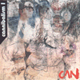
- Father cannot yell
- Soup
- Mother Sky
- She brings the Rain
- Mushroom
- One More Night
- Outside my door
- Spoon
- Halleluwah
- Aumgn
- Dizzy Dizzy
- Yoo Doo Right
- Holger Czukay (bass)
- Michael Karoli (guitars)
- Jaki Liebezeit (drums)
- Irmin Shmidt (keyboards)
- Damo Suzuki (vocals)
- Malcolm Mooney (vocals)
#八王子の中古屋さんで、確か\850だったと思います。(タイトル通りならば)CANの1977.3.4のイギリスAstonでのライヴ、ブートレッグCD。
Holger Czukayの"radio"ってクレジットが笑えますね、音質は割と良い方だと思います。Dizzy Dizzyの少しずつテンション上がってくトコなんて、気持ちいいです。
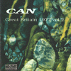
- Fizz
- Vitamin C
- Pinch
- Dizzy Dizzy
- Holger Czukay (radio)
- Michael Karoli (guitars,vocals)
- Jaki Liebezeit (drums)
- Irmin Schmidt (vocals,organ)
- Rosko Gee (bass)
- Reebop Kwaku Baah (percussions)
ON THE ROAD: TKCD-1118
- Bayreuth Return
- Wahnfried 1883
VIRGIN RECORDS: OVED-24 (original relase 1975 - BRAIN)
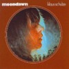
- Floating
- Mindphaser
- Klaus Schulze
- Harald Grobkopf (drums)
POLYDOR: POCP-2380 (original release 1976 - BRAIN)
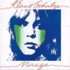
- Velvet Voyage
- Crystal Lake
POLYDOR: POCP-2381 (original release 1977 - BRAIN)
#とてもピンクフロイドです、ウマグマ(今、変換したら「馬熊」だって、いい感じ)の頃のピンクフロイドのサイケな所を拡大解釈したよーなアルバム。
これだけで20分の曲作ってしまうのが、ドイツらしい極端さなのかも。もー70年代ドイツでしか有り得ないよーな、ギトギトのサイケロックが楽しめます。
Light and Darkness
- a) LIGHT: Look at your sun
- b) DARKNESS: Flowers must die
- Schwingungen (振動)
- Suche (探索)
- Liebe (愛)
- Hartmut Enke (guitars,bass,electronics)
- Manuel Gottsching (guitars,organ,electronics)
- Wolfgang Muller (drums,vibes)
- Uli Popp (bongos)
- Jaw-Harp (percussions)
- Mathias Wehler (alto sax)
- John L. (vocals)
KING RECORDS/NEXUS: KICP-2734
Metronome/Ohr: OMM-556020 (1972)
#ドイツのサイケフォークで一番有名なヤツかな、女性ボーカルのトラッドフォーク調にドラッグを混ぜた感じの音楽。
ジワジワ効いてくる類の音かも。
- Waren wir
- "Peter"
- Strohhalm
- Requiem fur einen wicht
- Erwachen
- Wetterbericht
- Traum
- Nanny (vocals)
- Nops (flute,violin)
- Peter-kassim (bass,acoustic guitrs,vocals)
- Michael (drums,percussions)
- Jochen (cello,acoustic guitars,organ,mellotron)
- Christian (guitars)
- Peter Bursch (sitar on 3.)
- Mike Hellbach (talba on 3.)
- Walter Westrupp (flute on 5.)
ZYX MUSIC: 2021314-2
BASF/Pilz: 20 21314-5 (1972)
#これは...ジャケットが良いです。青地に光る麦畑が広がる幻想的な感じので、結構内容とマッチしてます。内容は幻想的なサイケフォークです、holderlinにも似てますけど、あっちが夜の音だとするとこのアルバムは真昼のイメージです、白昼夢。
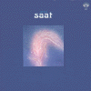
- Walkin' in The Park
- Traume (夢)
- Touch The Sun
- Love Time Rain
- Saat (芽生えの時)
- Die Reise (旅)
- Maik Hirschfeldt (guitars,bass,synthesizers,vibraphone,vocals)
- Dolly Holmes (organs,electric piano,mellotron,vocals)
BASF/Pilz: 20 29077-8 (1972)
#なんだか珍しいドイツのシンフォニックプログレ。あまり好みじゃなかったんで、うっぱらっちゃったんですけど...何故かドイツのこの年代のロックはちょっとピンクフロイドっぽくなるんですよね。
- Mother Universe
- Braintrain
- Shakespearesque
- Dedicated to Mystery Land
- Relics of Past
- Golden Antenna
- Jurgen Dollase (keyboards,vocals)
- Harald Grobkopf (drums)
- Bill Barone (guitars,backing vocals)
- Jerry Bakers (bass,vocals)
BASF/Pliz: 20 29113-8 (1972)
#これもドイツのシンフォニック系、だけど上のと違って結構気に入ってます。
キーボード主体でわかりやすい感じなんですけど。イタリアプログレみたいに濃くないし、イギリスプログレみたいに湿っぽくないし.....ちょっと控えめでブルースっぽい感じ。大絶賛されるよーなCDでは無いですけど、何故だか手放せないでいる一枚です。
- Aufbruch
- Wunderschatze
- Sommerabend
- Wetterlenchten
- Am Strand
- Der Traum
- Ein neuer Tag
- Ins Licht
- Detlef Job (guitars,vocals)
- Lutz Rahn (keyboards)
- Heino Schunzel (bass,vocals)
- Hartwig Biereichel (drums)
Metronome Musik: 841354-2
BRAIN RECORDS: (1976)
#気違いドイツ人達のヘロヘロ/クラクラセッションが延々40分程収められてます。こーゆーの好きだなぁ〜。
サイケでドラッギーですけど、暗くはないです。。Klaus Schulzeは壮大に盛り上げようとしてたりするんですけど、Manuel Göttschingの「ピロピロー」ってギターと、ドカスカ言うドラムがすべて台無しにしてくれます。
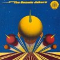
- Galactic Joke
- Cosmic Joy
- Jurgen Dollase
- Manuel Göttsching
- Dieter Dierks
- Klaus Schulze
- Harald Großkopf
KING RECORDS: KICP-2858
Kosmsche Musik: KM-58008 (1973)
#...いやぁ、この面子のオムにバスじゃ黙って買うしか無いです。これが90年代に行われたイベントとは思い難い素敵な面子が集まってます。ドイツじゃこんな事を本当に毎年やってるんでしょうか？行きてー。今すぐ。
- Gong/Would you like some tea?
- Guru Guru/Space Baby
- Hawkwind/Love in space
- Faust/Allerdings weibt du
- Embryo/Maroc
- Chris Karrer/Ya Habibi
- MAN/The Ride & The View
CAPTAIN TRIP RECORDS: CTCD-157 (1998)